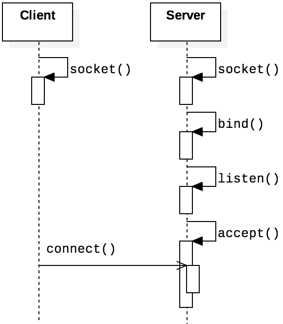
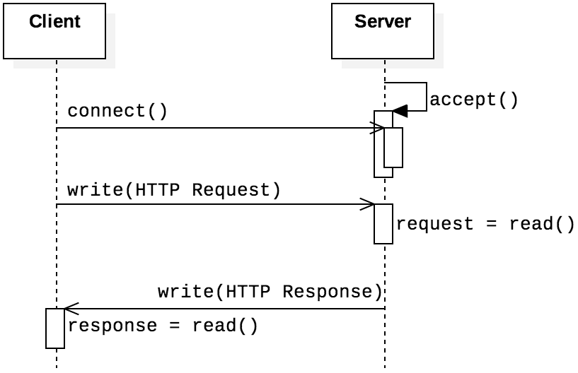
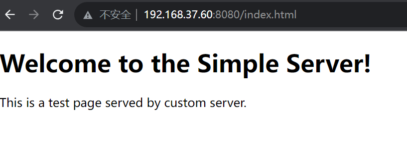
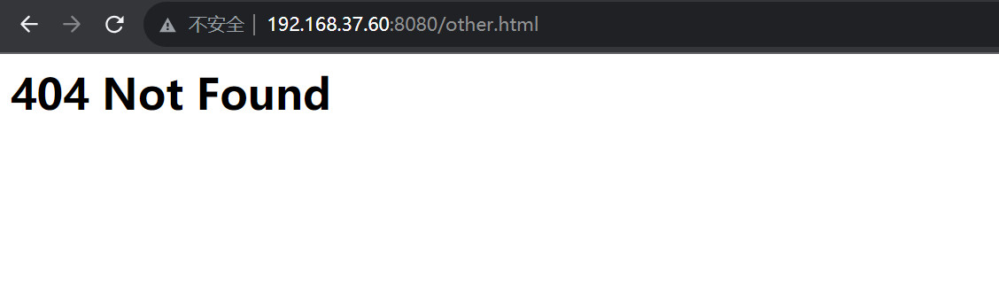
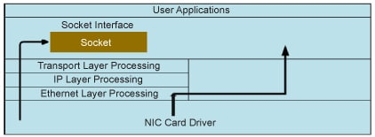

Socket programming is an elegant programming interface for both application and low-level packet processing.
In this lab, you will familiarize yourself with network programming by utilizing sockets. Specifically, you will first implement a Web server by using application-level socket. Next, you will experiment with ICMP tunneling, packet sniffing, and packet spoofing, by using raw sockets.
You should download this source code to start with this lab.
When you finished the lab, zip you code files with file name ID-lab-3.zip (e.g., SA19225111-lab-3.zip), and submit it to Online Teaching Platform. The deadline is 23:59 of Oct. 22, 2023 (Beijing time). Any late submission will NOT be accepted.
In this part, you need to implement a square server. The server fetch a number n from the client, calculates its square n*n then returns the result to the client. And when the client inputs a special command bye, should disconnect from the server.
The socket interface provides a mechanism for setting up a communication channel to another host system.
The server calls socket() to create a new socket. Like other IPCs such as pipes or memory mapped files, sockets are treated as files, thus it is convenient to process sockets with file operations (e.g., one can read file a socket with read()).
/* defined in sys/socket.h */
int socket(int domain, int type, int protocol);
The domain field declares the socket domain, indicating whether the socket belongs to IPv4, IPv6, or Unix. The type field determines the type of the socket: byte stream, datagram, or raw data. The protocol field indicates the protocol to be used in this socket.
Some typical values for the field domain has been listed in the following table. For example, the constant AF_INET indicates an IPv4 network, whereas AF_INET6 indicates an IPv6 network.
| Field | Constant | Purpose |
|---|---|---|
| domain | AF_INET | IPv4 addresses |
| AF_INET6 | IPv6 addresses | |
| AF_LOCAL | Unix domain socket | |
| AF_NETLINK | Netlink socket |
After creating a socket, the server can make use of the following three function to accept requests from clients (The well-known bind-listen-accept socket programming idiom.)
int bind(int socket, const struct sockaddr *address, socklen_t address_len);
int listen(int socket, int backlog);
int accept(int socket, struct sockaddr *address, socklen_t *address_len);
First, the bind() function binds the current socket to an address. Second, the listen() function converts the socket to a connection-oriented server socket with a designated request queue. The second parameter, backlog, sets up the maximum number of enqueued connection requests. Finally, a call to function accept() establishes connections with incoming requests. The accept() function is blocking, so the process will block until a new request arrives. When a new request arrives, accept() establish the connection with a new socket, storing the client address in the address variable.
After creating a server socket, we can develop a client socket making requests to the sever socket. Compared with server socket, client socket is simpler: it just connects to the server by invoking the following function.
/* defined in sys/socket.h */
int connect(int socket, const struct sockaddr *address, socklen_t address_len);
Having finished reading both the server and client code, we can (finally) compile and run them, in two separate terminals.
css-lab@tiger:~$ make square-server
gcc square-server.c -o square-server.out
./square-server.out
Server is listening on port 12345...
...
css-lab@tiger:~$ make square-client
gcc square-client.c -o square-client.out
./square-client.out
Connected to server. Enter 'bye' to exit.
...
In this part, we will implement a minimal but working HTTP server, to demonstrate how to use TCP sockets to build high-level the protocols such as HTTP.
The next figure presents the basic architecture of both a Web server and Web client (normally a browser). The client sends HTTP requests to the server, and the server sends back responses.
To test your code, open your favorite browser, and request some files.
css-lab@tiger:~$ ifconfig
eth0: flags=4163<UP,BROADCAST,RUNNING,MULTICAST> mtu 1500
inet 192.168.37.60 netmask 255.255.240.0 broadcast 192.168.47.255
inet6 fe80::215:5dff:fe9b:2b4e prefixlen 64 scopeid 0x20
ether 00:15:5d:9b:2b:4e txqueuelen 1000 (Ethernet)
RX packets 98802 bytes 62267057 (62.2 MB)
RX errors 0 dropped 0 overruns 0 frame 0
TX packets 63864 bytes 17556137
TX errors 0 dropped 0 overruns 0 carrier 0 collisions 0
For files does exist on your server, the output looks like:
Otherwise, for non-existent files, the output looks like:

css-lab@tiger:~$ curl "http://127.0.0.1:8080/index_$(printf 'a%.0s' {1..1500}).html?"
What do you observe? How does it threat your server?
How to mitigate?
Raw sockets allows us to access and process low-level packets. By low-level, we are talking about packets at or under the transportation layer. As the following figure depicts, the user application can set up socket at diverse layers.
To create a raw socket, we call the socket function with arguments like the following:
int sock = socket(AF_PACKET, SOCK_RAW, htons(ETH_P_ALL));
which will set up a raw socket at the link layer, that is,
we can obtain and process all Ethernet packets.
For more information and combination of arguments, you may want to refer to some online documents.
The firewall of computer will inspect and filter network packets,
deciding whether to allow or deny the packets based
on predefined rules and policies.
For example, firewall sometimes
blocks access to some ports. However, general firewalls do not
block the ICMP protocol (ping packets). Therefore, we can
bypass the firewall by establishing an
ICMP (Internet Control Message Protocol) is used to send control messages in TCP/IP networks, providing feedback for various problems that may occur in the communication environment. The ICMP packet format is:

The query packets in ICMP protocols are classified into two categories: Echo request and Echo reply. When an Echo request packet is sent to a server, it will reply with an Echo reply packet. The useful ping command works in this way.
The data structure for ICMP resides in netinet/ip_icmp.h:
struct icmphdr{
uint8_t type; /* message type */
uint8_t code; /* type sub-code */
uint16_t checksum;
union{
struct{
uint16_t id;
uint16_t sequence;
} echo; /* echo datagram */
uint32_t gateway; /* gateway address */
struct{
uint16_t __glibc_reserved;
uint16_t mtu;
} frag; /* path mtu discovery */
} un;
};
With this data structure, we can construct ICMP packages. ICMP messages have an optional data field, which we will abuse to transport information.
We use the following structure to organize the data segments:
typedef struct icmp_tunnel{
unsigned char sname[NAMESIZE];
unsigned char dname[NAMESIZE];
unsigned char data[BUFFSIZE];
}tunnel;
We will put this structure in the data segment of the ICMP packet
and send it to the specified IP with the type Echo request.
If the other host is online, it can receive the message we sent, and likewise,
we can also receive the message sent by the other, so ICMP
tunnel communication can be achieved.
-----------------------------------------------------------------------
|css-lab@tiger:~$ sudo ./icmp |css-lab@tiger:~$ sudo ./icmp |
|Enter your name: H1 |Enter your name: H2 |
|Who you want to talk: H2 |Who you want to talk: H1 |
|Enter the dest IP: 127.0.0.1 |Enter the dest IP: 127.0.0.1 |
|hello! | H1 : hello! |
|I'm H1 | H1 : I'm H1 |
| H2 : hi |hi |
| H2 : I'm H2 |I'm H2 |
-----------------------------------------------------------------------
Computers are connected to the network through network interface cards (NICs). A NIC is a physical or logical connection between a computer and the network. Each NIC has a hardware address, which is called a MAC address.
When the NIC receives a packet from the network, it copies the packet to the memory of NIC, and checks the destination address in the header of the data frame. If the destination address does not match the MAC address of the NIC, the packets are discarded without further processing. Otherwise, the data frame is copied to the kernel cache, and the NIC then interrupts to tell the CPU to finish processing the data.
Because the NIC discards packets that do not match its MAC address, a network sniffer cannot obtain these frames. Fortunately, most network cards have a special mode called promiscuous mode. In this mode, the NIC passes all data frames it receives from the network to the kernel, regardless of whether the address matches.
In this part, we need to turn on the promiscuous mode of the local network card, to sniff packets in the wild.
In this part, you need to analyze the structure of ARP, ICMP, TCP, and UDP packets and print detailed information of them.
During network sniffing, sniffers are often only interested in certain types of packets (e.g., TCP packets). Therefore, after packets are captured, you need to filter out some uninteresting packets.
In this part, you implement packet spoofing. Specifically, we have given a program for forging ICMP packet. Feel free to refer to code in Part C to create packets.
Forging a valid TCP packet is more challenging. Nevertheless, to forge an initial SYN packet is relatively easy.
Happy hacking!